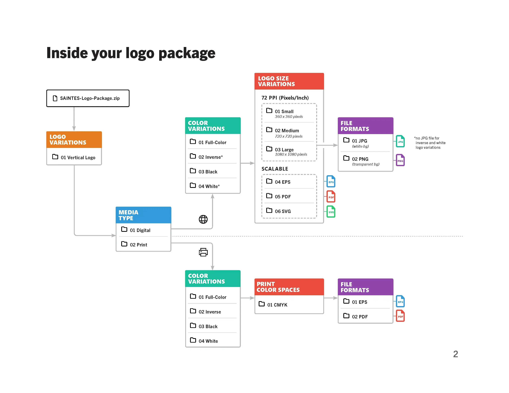
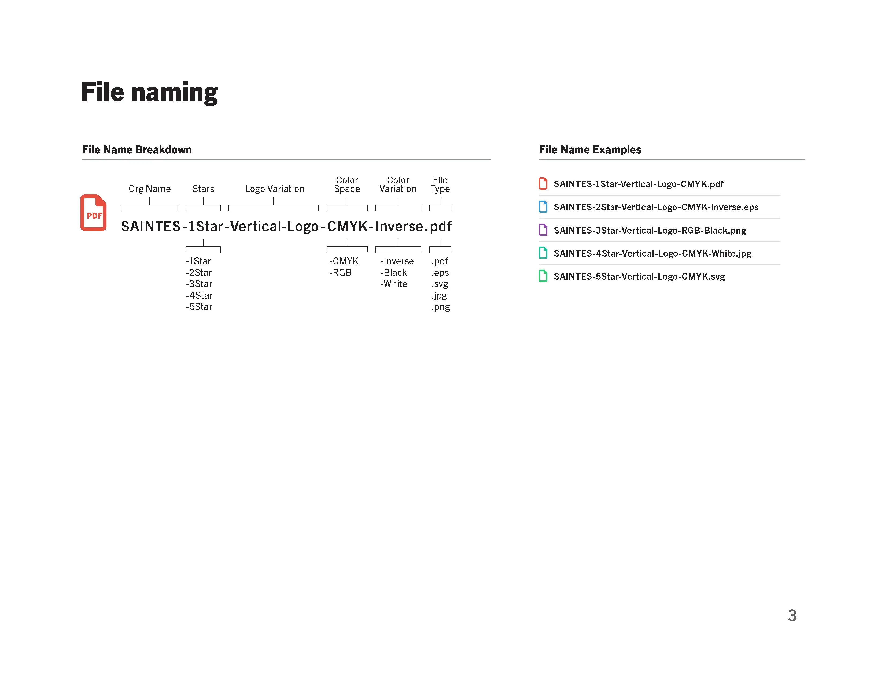
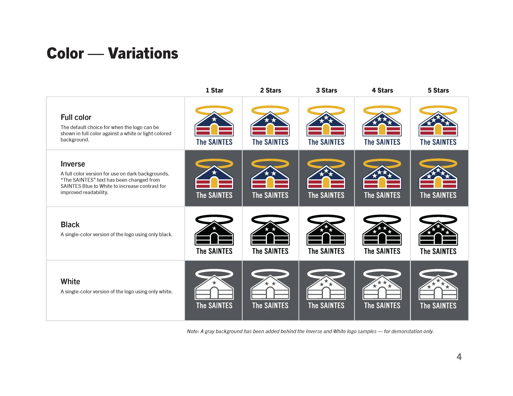
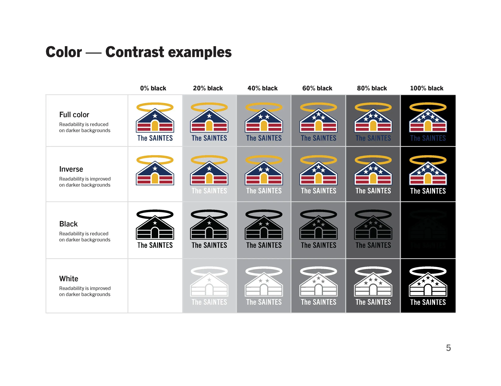
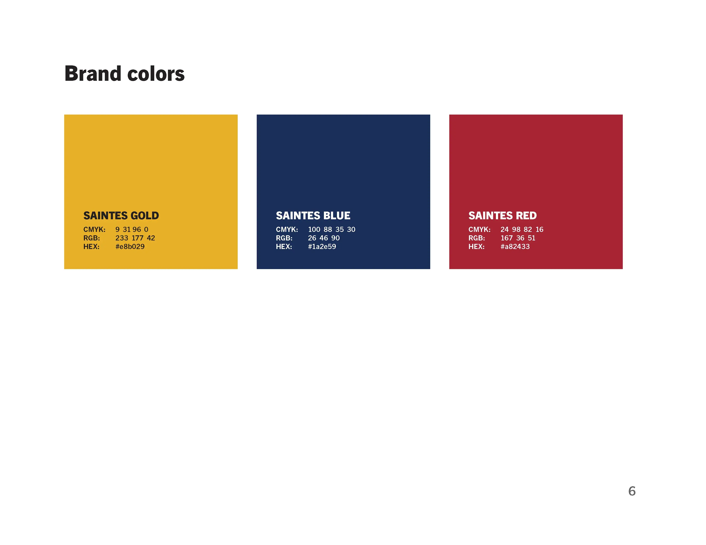
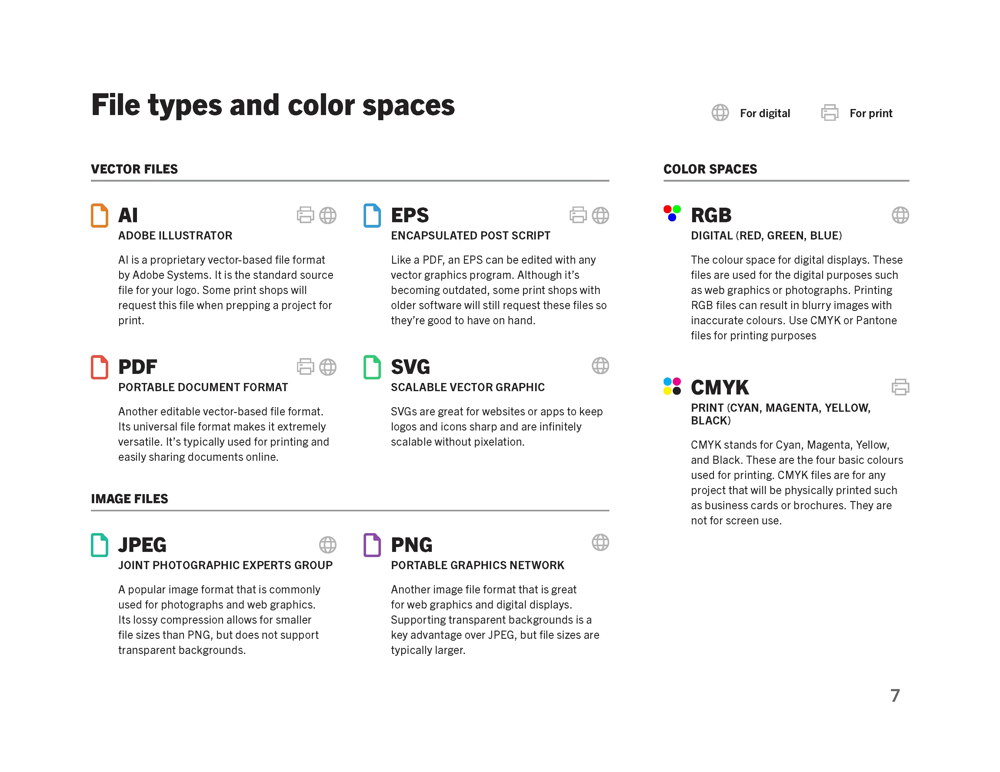
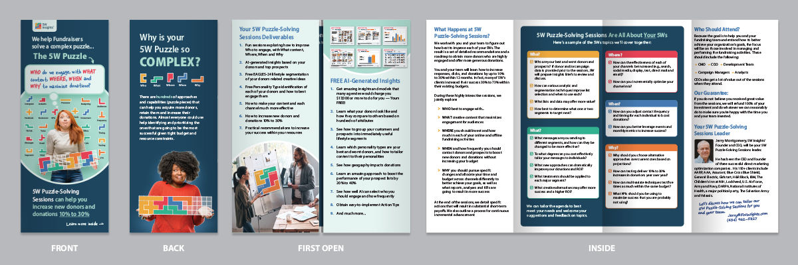
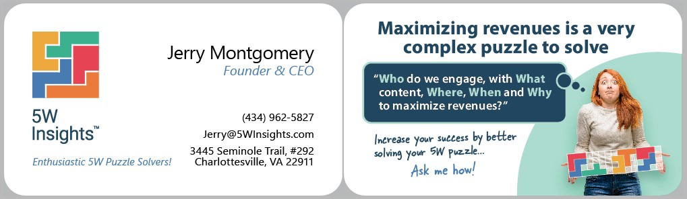

<main class="">

            <!-- Main Content -->
            <div class="uk-section" uk-filter="target:js-filter">
                <div class="uk-container uk-container-large">
                    <div uk-filter="target: .js-filter">
                        <div class="uk-grid uk-grid-divider" uk-grid>

                            <!-- left -->    
                            <div class="uk-width-3-5 uk-width-1-4@s uk-width-1-5@m uk-visible@s"
                                 uk-scrollspy="target: > div; cls: uk-animation-fade; delay: 200">

                                <!-- sticky nav (hidden for mobile) -->
                                <div class="uk-margin-top" 
                                     uk-sticky="end: true; offset:150" 
                                     uk-scrollspy-class="uk-animation-scale-up">
                                    <ul id="cas-nav" class="uk-nav uk-nav-default uk-margin-left uk-margin-xlarge-top" uk-scrollspy-nav="closest: li; scroll: true">
                                        <li><a href="#integrity-superchargers">Integrity Superchargers</a></li>
                                        <li><a href="#the-saintes">The SAINTES</a></li>
                                        <li><a href="#5w-insights">5W Insights</a></li>
                                    </ul>
                                </div>

                            </div>

                            <!-- center/right -->
                            <div class="uk-width-1-1 uk-width-expand@s uk-width-3-5@m" uk-scrollspy="target: > div > div; cls: uk-animation-slide-bottom-small uk-animation-slide-right; delay: 200">


                                <div class="uk-width-1-1 uk-width-expand@s" >

                                    <div class="uk-container uk-container-small">
                                        <div>
                                            <div>
                                                <h1 class="fw-600" style="font-size: clamp(1.75rem, 3.5vw, 3rem); letter-spacing: -1px">Strategic  Design Transformations</h1>
                                            </div>
                                            <div>
                                                <h3 class="fw-400 fs-16">Every  transformation on this page started as a real-world business hurdle. This gallery is a peek behind the curtain at my process, showing how I take raw concepts or flawed assets, find their potential, and craft them into highly intentional, production-ready assets for the real world.</h3>
                                            </div>
                                            <hr />
                                        </div>

                                        <ul class="uk-subnav uk-subnav-pill uk-hidden">
                                            <li uk-filter-control=".tag-logo"><a href="#">Logos</a></li>
                                        </ul>
                                    </div>


                                    <div class=" uk-container uk-container" uk-height-viewport="expand:true">
                                        <div class="uk-container" >

                                            <ul class="js-filter uk-list uk-grid uk-grid-divider" uk-grid >

                                                <li id="integrity-superchargers" class="tag-logo">
                                                    <div class="uk-margin">
                                                        <!-- image -->
                                                        <div class="">
                                                            
                                                        </div>
                                                        <!-- description -->
                                                        <div >
                                                            <h4 class="fs-24 fw-800 uk-margin-small-bottom">Integrity Superchargers</h4>
                                                            <p class="fw-600">2026 &bull; Commissioned Concept Exploration</p>
                                                            <p class="fs-15 uk-margin-small-top"><b>About:</b> Nonpartisan community platform empowering Americans to strengthen their lives and communities through integrity-driven action</p>
                                                            <p class="fs-15 uk-margin-small-top"><b>The Refinement:</b> Solicited to explore stronger directions for the client's original concept, I replaced a visually and metaphorically weak tree graphic with a bold "I" monogram. This new structure works on multiple strategic levels: it acts as the initial for Integrity, symbolizes individual agency, serves as a solid trunk to replace the original sagging tree, and takes the form of a classical pillar &mdash; representing integrity itself as a foundational ethical virtue. This commissioned exploration successfully established a highly stable, trustworthy visual anchor before the client paused the initiative.</p>
                                                        </div>
                                                    </div>
                                                </li>

                                                <li id="the-saintes" class="tag-logo">
                                                    <div class="uk-margin">
                                                        <!-- image -->
                                                        <div class="">
                                                            
                                                        </div>
                                                        <!-- description -->
                                                        <div>
                                                            <h4 class="fs-24 fw-800 uk-margin-small-bottom">The SAINTES</h4>
                                                            <p class="fw-600">2025 &bull; Logo refinement</p>
                                                            <p class="fs-15 uk-margin-small-top"><b>About:</b> Nonpartisan civic movement leveraging collective voting power and fact-based education to advance economic fairness and security across America</p>
                                                            <p class="fs-15 uk-margin-small-top"><b>The Refinement:</b> Balanced a raw AI-generated layout, injecting intentional institutional storytelling and precise production geometry:</p>

                                                            <div class="uk-background-muted uk-padding uk-border-rounded ">
                                                                <div class="uk-child-width-1-2@s uk-grid" uk-grid>
                                                                    <div>
                                                                        <p class="uk-margin-remove fs-14"><b>Architectural Blueprint</b><br />Re-proportioned the logo to project absolute strength and stability through a wider baseline. The structural framework explicitly mirrors the historic facade proportions of the White House at the base, topped by the precise aerodynamic angles of the B-2 Spirit stealth bomber.</p>

                                                                    </div>

                                                                    <div>
                                                                        <p class="uk-margin-remove fs-14"><b>Hidden Symbolism</b><br />Aligned the gold entrance and upper triangle to form a hidden, upward-pointing arrow for progress, anchored by a pair of red eqaul sign representing balance and equality.
                                                                        </p>
                                                                    </div>

                                                                    <div>
                                                                        <p class="uk-margin-remove fs-14"><b>Manufacturing Optimization</b><br />Engineered the perimeter silhouette to scale flawlessly for a stamped lapel pin execution for lawmakers, refining the halo to add dimensional depth without breaking vector constraints.</p>
                                                                    </div>

                                                                    <div>
                                                                        <p class="uk-margin-remove fs-14"><b>Typography</b><br />Replaced the generic, crowded lettering with a commanding, high-legibility sans-serif typeface.</p>
                                                                    </div>
                                                                </div>
                                                            </div>

                                                            <p class="fs-15 uk-margin-large-top"><b>Saints Logo Usage Guidelines</b> </p>
                                                            <p>Anticipating the organization's future deployment needs, I developed a functional hand-off guide to ensure seamless logo integration across media. While the 1-5 star tiering system was a specific client requirement, I proactively engineered inverse and single-color variations to guarantee legibility across complex, high-contrast backgrounds. This guide acts as a practical roadmap for their internal teams, detailing file naming conventions and color space rules to prevent future execution errors.</p>

                                                            <div class="uk-grid uk-grid-small uk-child-width-1-3" uk-lightbox="animation: fade" uk-grid>
                                                                <a href="img/5winsights/saintes-logo-usage-guidelines-2.webp" data-caption="SAINTES Logo Usage Guidelines" data-type="image"></a>
                                                                <a href="img/5winsights/saintes-logo-usage-guidelines-3.webp" data-caption="SAINTES Logo Usage Guidelines" data-type="image"></a>
                                                                <a href="img/5winsights/saintes-logo-usage-guidelines-4.webp" data-caption="SAINTES Logo Usage Guidelines" data-type="image"></a>
                                                                <a href="img/5winsights/saintes-logo-usage-guidelines-5.webp" data-caption="SAINTES Logo Usage Guidelines" data-type="image"></a>
                                                                <a href="img/5winsights/saintes-logo-usage-guidelines-6.webp" data-caption="SAINTES Logo Usage Guidelines" data-type="image"></a>
                                                                <a href="img/5winsights/saintes-logo-usage-guidelines-7.webp" data-caption="SAINTES Logo Usage Guidelines" data-type="image"></a>
                                                            </div>
                                                        </div>

                                                    </div>
                                                </li>

                                                <li  id="5w-insights" class="tag-logo">
                                                    <div class="uk-margin">
                                                        <!-- image -->
                                                        <div class="">
                                                            
                                                        </div>

                                                        <!-- description -->
                                                        <div>
                                                            <h4 class="fs-24 fw-800 uk-margin-small-bottom">5W Insights</h4>
                                                            <p class="fw-600">2022 &bull; Brand Identity System &amp; Internal Rollout</p>
                                                            <p class="fs-15 uk-margin-small-top"><b>About:</b> A B2B consultancy that helps direct marketers maximize revenue by optimizing the "5 W's" of engagement: Who, What, Where, When, and Why</p>
                                                            <p class="fs-15 uk-margin-small-top"><b>The Refinement:</b> To visually anchor the company's core value proposition, I leveraged a classic 5-piece pentomino puzzle. By strategically mapping each interlocking shape to one of their core "W" variables, this geometric solution transcended a simple logo. It became a functional, highly scalable visual language that the company now uses to map complex direct marketing variables and tactics across channels. </p>
                                                            <p class="fs-15 uk-margin-small-top"><b>The Strategic Shift:</b> Rooted in classic direct marketing, the company's legacy materials relied heavily on dense, long-form copy. My goal was to bridge the gap between their proven, messaging-first philosophy and the need for quick visual impact. Working closely with executive leadership, I leveraged the 5W puzzle system to transition our collateral into a highly scannable, engaging format that honored the company's depth of expertise while successfully competing for attention.</p>
                                                        </div>
                                                        
                                                        
                                                        

                                                        <p class="fs-15">See more about how I implemented <a href="5winsights.html">5W’s new visual identity</a>
                                                        
                                                    </div>
                                                </li>
                                            </ul>
                                        </div>                          
                                    </div>
                                </div>

                            </div>
                        </div>
                    </div>
                </div>
            </div>
        </main>
